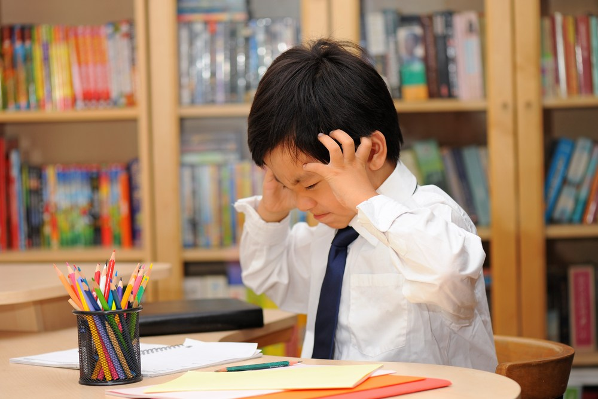
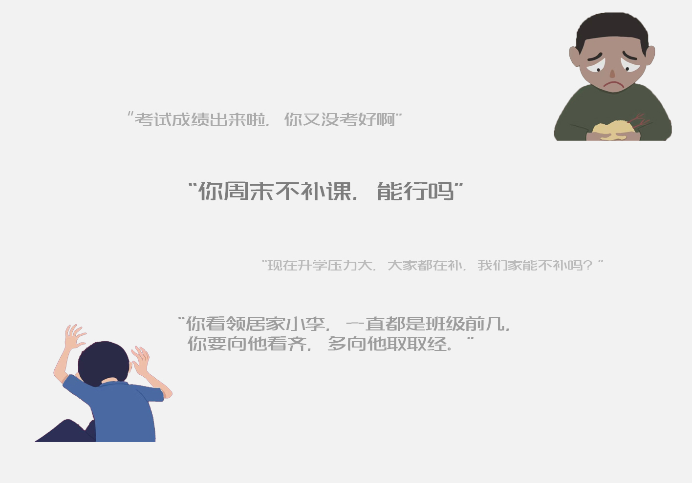

-

· 儿童压力 ·
“双减”之下，我们要拿去孩子身上多少担子？
-
 · 亲子忧虑 ·
· 亲子忧虑 ·“双减”之下，我们要拿去孩子身上多少担子？
-
 · 教育内卷 ·
· 教育内卷 ·“双减”之下，我们要拿去孩子身上多少担子？
孩子们有话说
孩子们有话说
*点击观看中小学生采访实录
2021年7月24日，《关于进一步减轻义务教育阶段学生作业负担和校外培训负担的意见》发布，“双减”政策落地。
因此，在新学年伊始，社会关注度最高的莫过于“双减”政策的落地实施。随着大批校外培训机构相继关闭，“减负”成为家长群最受关注的话题。
简单来说，“双减”政策就是做两大减法，一是减轻学生作业负担，二是压减学科类校外培训机构。
做作业——这是每个学生就逃不过的事。然而，一些学校作业数量过多、质量参差、功能异化，既达不到温故知新的效果，又占用了学生正常的锻炼、休息、娱乐时间，使得学生身心压力成倍增加。尽管这些年很多学校已在慢慢减少学生的课作业，但是为了“排名靠前”，为了“不落下其他人”，义务教育阶段的孩子几乎人人都参加课外辅导班。长期以来，校内减负校外增负，而且校外增加的负担处于失控、失管的状态。
由此，“双减政策”以及近年来一系列减负政策的初衷是为学生减负，希望拿掉孩子们身上过多的“重担”。
减负政策的密集颁布，不仅仅体现出学生负担过重问题的严重性和减负的紧迫性，另一方面也体现出国家对减负的“重拳出击”。
同时，由上图可见，自2011年以来的近十年，《央视新闻》、《人民日报》等十家主流媒体对“减负”的报道热度呈现出持续升温且波浪式起伏的变化趋势。2018-2021年，
十家主流媒体的相关报道有明显上升趋势，也从侧面反映出中小学生受到的学业压力越来越受到国家和媒体的关注。
在这些报道中，“减负”“教育”“家长”“作业”“培训”成为了主要关键词。
那么，孩子们究竟受到了怎样的压力？
社会竞争有多大
作业、特长、补习班......如今中国的儿童们正面临着滚雪球般的压力，
多少成年人所留念的“轻松、自由、快乐的少年时代”，如今也成为儿童们的奢望。
一部育儿相关的电视剧《小舍得》引发众多关注，
不少人疑惑现在的孩子真的会这么累吗？事实正如电视剧所演绎的一样，现在的孩子面临着同龄的竞争，家长的期盼，老师的要求，
他们每天都要耗费大量的时间在作业以及各类课外辅导上，被迫成为“时间管理大师”。
2019年，全国初中毕业生一共有14,540,936人，
而中考升普通高中的升学率仅为57.73%。在各省市之间，
中考升学率也存在较大差异——在黑龙江的初中毕业生中，
无法升入普通高中的初中毕业生在占比在三成左右，
而在浙江占比则为五成左右。可见，与黑龙江相比，浙江中考压力较大。
"鼠标悬停查看不同地区2020年未升学率"

"鼠标覆盖即显示孩子的心声"
近年来，一个很明显的社会现象即是：新生儿逐年减少。2016年，由于人口出生率不断下降，我国出台二孩生育政策，但一直到2020年，出生人口仍旧只有1200万人，出生率已连跌4年。
于是在2021年，国家继而发布三孩政策。
伴随着人口出生率的下降以及各地区之间学校的合并趋势，学校数量也由此逐年减少。但需要注意的是，新生儿的减少并不代表着入学人数的减少，我国庞大的人口基数与二孩政策前的出生率仍然决定着，义务教育阶段的入学人数依旧攀升，从2014年起，我国小学和初中的在读人数逐年增加，2020年的总入学人数已达1.5639亿人。“人多力量大”，对于中小学生而言，却是“人多压力大”。入学人数越来越多，中小学学校数量却越来越少，在国家未出台相关政策之前，北京、杭州等多地中，50多人的大班比比皆是。孩子们面对的，是人满为患的学校，是不断再不断扩大的班级，是老师无法精细地照顾到自己，更是愈砌愈高的压力围墙。
为了弥补学校大班教育的不足，为了在激烈的竞争中处于不败之地，为了培养孩子的兴趣与爱好，为了...大量的课外教育机构由此产生，课外教育培训产业规模呈现高速发展态势。不少孩子上学，带的远不止校内书籍，还有许多课外作业本，因为他们放学后，便要立刻赶去各个辅导机构，进行新一轮的“学习”。
“双减”政策到来之前，K12教育机构曾迎来了暂时的高光时刻。逐年扩大的市场规模背后，是无数家长对于孩子教育的巨大需求。
2020年，在线教育更是在疫情之下，风生水起，使得K12在线教育迎来发展高峰。猿题库APP、小猿搜题、作业帮、新东方，以及各大网课的源源不断地涌现。其中猿辅导和作业帮相加的融资额就拿走了全年总额的7成。
“这届孩子，是被‘累垮’的一代。”
正如著名教授李玫瑾所说。
现在的孩子每天都要耗费大量的时间在作业以及各类课外辅导上，学习的时间远远超乎我们的想象。
上了什么补习班

每每小测成绩公布，小陈就被妈妈的“唠叨”扰得心烦意乱。
他坐在书桌前，望着眼前红色绿色蓝色的作业本，堆叠的试卷，流下了无声的泪水； 阳台上，陈妈妈来回踱步，她不知道为什么上了这么多的课外培训班， 自己家孩子的成绩一直没进步，也不知道自己心爱的孩子该何去何从。 应试教育的现状下，课业成绩早已成了家长心中最亮的灯，也是最深的刺。
那么，究竟家长给孩子花的钱有没有都用在“刀刃”上呢？ 根据调查结论，在校外辅导上，高达85.5%的中小学生会参加学科课程，近一半的中小学生会参加兴趣课程。 同样的，我们分别对小学、初中等义务教育阶段各个年龄层的孩子们采访时也发现，他们无一例外都会参加学科课程辅导。
显然，语数英三大主科作为拉分的关键，毫无疑问地成为家长们乐于积极投资的补习班科目。 而在兴趣课程中，书法绘画、舞蹈、乐器的报名率较高。 在深夜灯光下映照的孩子的脸，是有笑容的吗？在周末早晨孩子们背诵的英语文章后面，你有听到他们的哀叹吗？ 而被占用了大量时间的孩子们，睡眠时间也被压缩。睡眠对于儿童的发育和健康是十分重要的，早在10年前，《中小学健康教育指导纲要》中就已经指出，小学生每天睡眠时间10个小时，初中生每天睡眠时间9个小时。休斯顿大学心理学教授Alfano博士研究也发现，睡眠不足会影响孩子的心理健康，使孩子的负面情绪增多，影响孩子积极的情感体验。 据《2019中国青少年睡眠健康研究报告》可见，睡眠时间长于10小时的小学生不足10%，绝大部分中学生睡眠时间都低于9小时。于是有人这么说：现在的孩子，真的什么都不缺，但是却跟很多大人一样，缺觉。而且还不是缺一点点。
是什么抢走了孩子们的睡眠？ 那些深夜11点还没有睡觉的孩子在做什么？ 写作业。这是一个毋庸置疑的回答。
“假期作业一点儿不少，现在临近期末了几乎每科老师都发了好几份卷子，孩子每天晚上都睡得挺晚，昨晚也是差不多11点才睡觉。”小聪的爸爸说。
“只要语文老师留了阅读作业，我家孩子那天的睡觉时间就会很晚。”初一学生家长刘女士说。
不断增加的学习时间， 日益频繁的作业考试， 越堆越高的作业本， 应试竞争下的压力循环…… 学校、老师、补习机构，甚至家长们， 一点点带走了孩子们的睡眠时间。 “我都习惯熬夜了，早点睡反而睡不着。” “我每天早上都不想起床，因为感觉自己才睡了一会会。” “我很羡慕可以早睡的同学，因为他们看起来很开心。”
家长们的焦虑
根据《2019年中国商业教育辅导市场消费力报告》显示，
基于小学到高中学龄孩子的家长，
家庭教育支出，
包括学校教育、校外商业教育辅导以及一切与孩子教育相关的直接花费，
每家庭每学期（半年）平均支出为5877元。而2019年，全国居民人均工资性收入为17186元。
报告中有72.8%的家庭中孩子教育支出占家庭总支出的十分之一以上，
其中竟然有14.6%的家庭中孩子教育支出超过家庭总支出的一半以上，
这个数目是相当可怕的，
我们很难想象，当一个家庭的总支出一半以上都花在孩子的教育上时，
这个家庭面临着怎样的经济压力，父母该有多么忧愁，孩子又有多么痛苦。
家庭条件较好的汪雨一家对日益高昂的培训费也很头疼。“我现在给孩子补的语文和数学，还在上围棋课和绘画课。原来还报了舞蹈和钢琴课，实在是负担不了，后来取消了。”汪雨有些哭笑不得。 “最辛苦的不是读书这条路，而是一旦在同龄人中落后，那孩子以后的路才是最辛苦的。”汪雨说，他们那一代人，大家在上学时条件都不怎么好，竞争体现在个人的努力和勤奋上。“现在，同代人竞争从小就开始了，实际上是家庭实力的竞争。” 汪雨家孩子豆豆今年11岁，上数学补课班一节课200元，钢琴兴趣班一节课500元，英语课外辅导一节课350元。 “一个月一万多块就没了。”汪雨说， 他是一家企业中层管理人员，老婆是外企白领，一年30多万的收入， 以前觉得很宽松，闲暇时还能出国旅游，现在觉得日子过得紧巴巴的。 根据调查结论，在校外辅导上，85.5%的中小学生会参加学科课程，40.4%的中小学生会参加兴趣课程。 学科课程中，英语、数学/奥数、语文/作文作为三大主科，是中小学生报名率最高的三大科。 而在兴趣课程中，书法绘画、舞蹈、乐器的报名率较高。 如此大的教育投入，势必会增加家长的焦虑情绪，乃至引发一系列的亲子矛盾和家庭问题。调查显示，有68%家长对孩子的教育感到“比较焦虑”“非常焦虑”。
这些焦虑的情绪，往往伴随着孩子的成长，也伴随着家长的老去。尤其在孩子的幼儿阶段、小学阶段、初中阶段表现得比较明显，其中之最则是在小学阶段。
小学阶段，是很多成年人事业的上升期，也是孩子们今后成绩、升学等拉锯战的开始，在这一起跑的关键结点，许多家长们往往费尽心思，想法设法让自己的孩子赢在起跑线上，也因此忙得焦头烂额，给自己和孩子施加了本不应有的过多的压力。
在孩子成长的过程中，中国父母普遍受焦虑情绪的困扰，小到什么时候说活，读什么幼儿园，大到考什么大学，从事什么工作，无一不是在焦虑中艰难抉择。
全社会的合力影响下，家长们把阶层跃升和巩固的希望更多地寄托于孩子的教育上。
《2018-2019中国家长教育焦虑指数研究报告》中显示，社会环境是造就中国家长教育焦虑的首要维度，家庭关系则位居其后，后两者则分为教育资源及模式以及父母能力与发展维度。值得注意的是，家长们对这四个维度的焦虑程度均已超过一般，接近于“比较焦虑”。
在这个高速发展的时代，随着三孩政策的推出，社会竞争的激烈程度只会与日俱增，教育资源的分配问题将会变得更加困难和棘手。没有一个家长不希望自己的孩子有一个光明的未来，也很少有家长面对高昂的补课费果断说“我家孩子不需要补”。很难说，哪个因素会成为“压倒成年人的最后一根稻草”。
出国还是留在国内
不少“70后”家长选择出国是认为理想中的教育模式与现实中的教育模式有差别, 更希望孩子能顺从本性，快乐成长。 “国内的高中多是应试教育，孩子每天有做不完的试卷，成绩的浮动影响着一家人的心情。 孩子压力大，父母压力也大，所以才想早早送孩子出国留学。” 市民赵女士说, 她不少朋友也在高中或初中阶段就将孩子送出国。 不少“80后”父母都在提前为孩子留学做准备。 张妈妈为让孩子提前了解国外的教育模式， 将其送到了格兰德中学，学习国际课程。 周末又让孩子在英科少年学院跟着外教学英语。 “每年都会带孩子出国看看国外的大学，孩子对悉尼大学和墨尔本大学比较感兴趣。” 小政(化名)的父母是国企高管，他们从高中开始便送小政去了国外。 “出国前，我就读的是本地最好的中学，成绩在班级名列前茅。 从初二开始，爸妈就给我定下了去美国读高中的目标。” 由此可见， 国外优质的教育资源以及国内过大的学习压力和竞争都促使越来越多的家长选择低龄留学。 有的家长唯恐自己在这场“鸡娃”竞争中落后，错失先机，让孩子丧失了竞争优势， 因此拼尽全力都要将孩子尽早送出国， 还有的家长则认为国内压力大，中高考竞争太激烈， 为了避免“千军万马过独木桥”，趁早送孩子出国。 相比于市场上对于国际化教育，出国留学的“唱衰”， 现阶段的家长反而更加坚定了走国际化教育道路的信心，比例不降反增。 选择双语、国际班家庭超过选择公办/体制内民办校， 选择体制内公办&民办占37.7%（2020年为46.4%，下滑近10%）， 有39.4%的家庭选择民办双语/国际部， 4.9%的家庭选择外籍学校， 7.1%的家庭选择海外学校。
有趣的是， 面对更小年龄的二孩和三孩， 集中在小学1-3年级以及幼儿园阶段， 家长选择公办、体制内民办的占比会更小， 外籍学校占比增加。 二孩就读的学校中，外籍学校比例增高，占9.5%， 公办比例下降，仅占15.5%。
尽管留学潮流不减，但家长和孩子仍对留学充满各种焦虑和担忧。 尤其在疫情之下， 低龄小留学生的安全和健康问题确实令人担心， 这也促使了一批海外小留学生的回流。 而在其他方面， 文化差异和语言交流也成了留学生们顺利留学毕业的“绊脚石”。
即使是疫情下不能出国上夏令营、旅行， 暑假花费3万以上的家庭依旧占了31.8%， 花费1万以上家庭占72.4%。 那这些钱都烧在哪里了呢？ 旅行、夏令营、还有学科类和非学科类的课外培训班（包括艺术、体育STEM等）， 其中包括艺术、体育、STEM等非学科类课外班是孩子投入精力最多的活动。
国内和国外读书孩子的家长在对于未来课外辅导的投入上，均表现了一致性。超过一半（53.8%）的出国留学的孩子家长依旧会同时安排学科和素质类补习班，仅有1成家长表示不会安排任何补习/培训班。也仍有接近40%的国内读书的孩子家长有意愿继续增加孩子校外辅导的投入，并且有近半数的家长表示要维持现状。